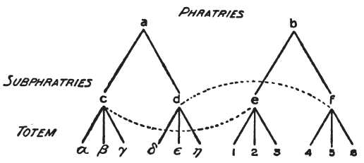

İlkel insanı, geçirmiş olduğu gelişim evreleriyle tanıyoruz; yani biz ilkeli bize bırakmış olduğu cansız anıtlar ve araçlarla, sanatıyla, dinsel ve masalsı, efsanevi ve düşsel öyküleriyle, yaşam üzerine düşüncelerine ilişkin bize ya doğrudan doğruya ya da dolaylı yoldan gelen bilgilerle ve sonuç olarak bizim bugünkü âdetlerimizde arta kalmış bir durumda yaşayan düşünce biçimleriyle tanırız. Üstelik bir anlamda o hâlâ bizim çağdaşımızdır, öyle kimseler vardır ki, biz onları hâlâ kendimizden çok ilkel insana daha yakın sayarız ve onlarda eski insanın doğrudan doğruya asıllarını ve temsilcilerini seçebiliriz. Vahşi ve yarı vahşi dediğimiz insanlar hakkında böylece bir yargıda bulunabiliriz. Onların ruh yaşamının bizim için özel bir önemi vardır; çünkü onların ruh yaşamında kendi gelişimimizin iyi korunmuş ilk evresini buluyoruz.
Bu varsayım doğruysa, etnografyanın bize öğrettiği "ilkel insan psikolojisi'' ile psikanaliz araştırmalarının bize öğrettiği "nevrozluların psikolojisi' arasında yapılacak bir karşılaştırma birçok benzer noktayı ortaya çıkaracak ve az çok bildiğimiz konuları aydınlatacaktır.
Gerek iç, gerekse dış nedenlerden ötürü bu karşılaştırma için etnografyacılar tarafından en geri ve en ilkel olarak gösterilecek boyları alıyorum: Bugüne kadar en arkaik ve başka yerlerde bulunmayan özellikleri hayvanlar dergisinde bile saklamış olan en yeni anakaranın, yani Avustralya'nın yerlilerini seçiyorum.
Avustralya yerlileri en yakın komşuları olan Melanezyalılar, Polinezyalılar ve Malayalılarla ne bedence, ne de dilce ilişiklik göstermeyen ayrı bir budun sayılıyor. Bunlar ev ya da kalıcı kulübeler yapmasını bilmez, tarım bilmezler, köpekten başka evcil hayvanları da yoktur. Hatta çömlek yapmasını bile bilmezler. Salt avladıkları hayvan etleriyle ve toprağı kazarak çıkardıkları köklerle yaşarlar. Kralları ya da başkanları yoktur. Tüm topluluklar ilgili sorunlar yaşlılar meclisinde kararlaştırılır. Bunlar arasında yüksek varlıklara tapmak biçiminde bir din olduğu söylenemez. Suyun kıtlığından dolayı en katı yaşam koşullarıyla savaşmak zorunda olan Avustralya'nın iç bölgelerindeki boyları, kıyı bölgelerinde yaşayanlardan daha ilkel görünüyor.
Elbette bu zavallı çıplak yamyamların, cinsel yaşamlarında bizim kendi düşüncelerimiz bakımından ahlaklı olmalarını ya da cinsel dürtülerini büyük ölçüde sınırlamalarını bekleyemeyiz. Bununla birlikte yakın akraba arasında cinsel ilişkide bulunmak yani "ensest" yapmaktan kaçınmak konusunda bunların en titiz özeni ve en büyük şiddeti göstermeyi görev saydıklarını da öğreniyoruz. Gerçekte bu insanların bütün toplumsal örgütlenmesi bu amaca hizmet ediyor gibi ya da onun elde edilmesiyle ilgili bir duruma getirilmiş gibi görünüyor.
Avustralyalılar arasında totemizm sistemi bütün dinsel ve toplumsal kurumların yerini almaktadır. Avustralya boyları küçük küçük birtakım klanlara ayrılmıştır. Bunların her biri kendi toteminin adını alır. Öyleyse totem nedir? Kural olarak yenebilen, zararsız ya da tehlikeli ve korkunç bir hayvan, ender olarak da bir bitki ya da (yağmur, su gibi) bir doğa varlığıdır. Totemin bütün klanla özel bir ilişkisi vardır. Totem her şeyden önce klanın atasıdır. İkincisi, klanın koruyucu ruhu ya da gözetenidir, klan halkına güç zamanlarda yol gösterir, çocuklarını daima tanır ve korur. Bunun için, totemdaşlar totemlerini öldürmemek ya da ona zarar vermemek, onun etini yememek ya da ondan herhangi bir biçimde yararlanmamak konusunda kutsal bir borç altındadır. Bu yasağın herhangi bir biçimde çiğnenmesi otomatik olarak cezalandırılır. Bir totemin özelliği yalnızca tek bir hayvanın ya da bir varlığın içinde değil, türün bütün üyelerinde gizlidir. Zaman zaman şölenler yapılır ve burada totemdaşlar birtakım törenli danslarla totemlerinin hareketlerini ve özelliklerini temsil eder ya da onlara öykünür.
Toteme bağlı olma durumu, ya anne tarafından ya da baba tarafından elde edilir. Totemin anne tarafından geçme durumunun, baba tarafından geçmesinden önce ve daha eski olması olasıdır. Bir toteme bağlılık, Avustralyalının bütün diğer toplumsal görevlerinin temelini oluşturur. Bir yandan boy bağlarının, diğer yandan da kan akrabalıklarının üstünde bir şeydir.
Totem bir toprağa ya da yere bağlı değildir. Aynı totemin üyeleri birbirinden ayrı olarak ve diğer totemlere bağlı kimselerle dostça yaşarlar.
Şimdi psikanalizin ilgisini çeken totemizm sisteminin özelliklerini ele alalım. Totemin bulunduğu hemen her yerde aynı zamanda şu yasa da vardır: Aynı toteme bağlı olanlar birbirleriyle cinsel ilişkide bulunamaz, birbirleriyle evlenemezler. Bu, totemle birlikte ekzogami denen kuralın da bulunduğunu gösteriyor.
Bu şiddetli yasak çok dikkate değer bir şeydir. Bunun, totemin içeriğinden ve özelliklerinden öğrendiğimiz şeylerle mantıksal bir ilgisi yoktur. Yani onun totemizm sistemine nasıl girdiğini anlayamayız. Onun için bazı bilginlerin başlangıçta ekzogaminin gerek köken, gerekse anlam yönünden totemizmle hiçbir ilgisi olmadığını, fakat evlenmeyle ilgili sınırlamaların bunu zorunlu kılması üzerine sonradan ona eklendiğini kabul etmelerine şaşmamak gerekir. Ne olursa olsun, totemizmle ekzogami arasında bir ilgi vardır ve bu da çok güçlüdür.
Bu yasağın anlamını tartışarak anlamaya çalışalım.
(a) Bu yasağın çiğnenmesi, diğer totem yasaklarında (örneğin totem olan hayvanın öldürülmesinde) olduğu gibi otomatik olarak cezalandırılmakla bırakılmıyor, bütün toplumu tehdit eden bir tehlikeden ya da herkesin üzerine gelecek olan bir günahtan kurtulmak sorunuymuşçasına bütün boy tarafından şiddetle bunun öcü alınıyor. Frazer'in kitabından alınacak birkaç tümce bu gibi günahların bizim bugünkü ölçülerimize göre oldukça ahlakdışı olan bu vahşiler tarafından nasıl karşılandığını göstermeye yeter. Frazer şöyle der:
"Avustralya'da yasak olan bir klana bağlı biriyle cinsel ilişkinin cezası daima ölümdür. Kadın ister aynı yerli topluluktan olsun, ister başka bir boydan kaçırılmış olsun, önemi yoktur; onu karısı olarak kullanan suçlu ve kadın klan arkadaşları tarafından öldürülebilir. Bazı olaylarda belirli bir zaman için ele geçmekten kurtulursa suç unutulabilir. Yeni Güney Gal'de Ta-ta-thi boyunda görülen ender olaylarda erkek öldürülür, fakat kadın yalnızca öldüresiye dövülür ya da mızraklanır ya da her ikisi birden yapılır. Kadını büsbütün öldürmemenin nedeni, onlara göre, kadının zorlanmış olma olasılığıdır. Hat a gelip geçici aşklarda bile klan yasakları en korkunç şeyler olarak düşünülür ve ölümle cezalandırılır.' (Howitt)
(b) Çocuk doğurmayla sonuçlanmayan sevişmeler için de aynı şiddetli cezanın verilmesi açısından, bu yasakların uygulamayla ilgili nedenlerle konmuş olmasını kabul etmeye olanak yoktur.
(c) Totem kalıtım yoluyla geçtiği ve evlenmekle değişmediği için, örneğin anne tarafından geçmesi durumunda yasağın sonuçları kolaylıkla anlaşılabir. Örneğin erkek klana Kanguruyla bağlıysa ve Emu toteminden bir kadınla evlenirse, kız ve oğlan bütün çocuklar Emu olur. Totem yasasına göre, kendisi gibi Emu olan annesi ve kız kardeşiyle yasak olan cinsel ilişkide bulunması böyle bir evlenmeyle doğan bir oğul için olanaksızdır.
(d) Fakat ekzogamiyle bağlı olan totemin daha başka sonuçları da olduğunu anlamak için biraz dikkat yeter. Yani bu durumda amaç, anne ya da kız kardeşlerle cinsel ilişkinin yasak edilmesinden fazla bir şeydir. Bu, aynı zamanda erkeğin kendi topluluğuna bağlı kadınlarla ve dolayısıyla kendisiyle kan akrabalığı bulunmayan birçok kadınla da cinsel ilişkide bulunmasını, bu kadınların hepsini kan akrabalarıymış gibi saymakla olanaksızlaştırır. Uygar uluslarda buna benzer şeyleri çok aşan bu korkunç yasağın psikolojik nedenleri ilk bakışta açık değildir. Bizim anlayabildiğimiz, bu yasakta totem olan hayvanın ata olduğuna gerçekten inanıldığıdır. Aynı totemden gelmiş olan herkes kan akrabasıdır, yani bir ailedendir ve bu ailede en uzak akrabalık dereceleri bile cinsel ilişkiye kesin bir engel olarak tanınmıştır.
Böylece bu ilkeller gerçek kan akrabalığı yerine totem akrabalığını koyarak bizim iyice anlayamadığımız bir özellikle karışık olan "ensest" isteğine karşı derin bir korku ya da duyarlılık gösteriyorlar. Fakat bu iki tür akrabalık arasındaki karşıtlığı fazla büyütmeyelim ve totem yasaklarının gerçek "ensest" i özel bir durum olarak içerdiğini aklımızda tutalım.
Bir toteme bağlı olan bir topluluğun nasıl olup da küçük aile yerine geçtiği bir bilmecedir. Bunun çözümü totemin kendisinin açıklamasına bağlıdır. Cinsel ilişkinin evlilik sınırlarını aşan bir özgürlük çerçevesinde oluşu kan akrabalığının aynı zamanda "ensest" i ne kadar önüne geçilemez bir duruma getireceğini düşünürsek, "ensest" yasağının aile bağlarının yerine klan bağlarını geçirdiğini varsayabiliriz. Öyleyse, Avustralyalıların âdetlerinin, bazı toplumsal durumlarda ve bayramlarda bir erkeğin, yasal eşi olması bakımından bir kadın üzerinde sahip olduğu kayıtsız şartsız kocalık hakkının çiğnenebileceğini kabul ettiğini kaydetmek gerekir.
Gerek bu boyların, gerekse diğer birçok totemli budunun dili, kuşkusuz bununla ilgili bir özellik gösterir. Akrabalığı göstermek için kullandıkları kavramlar iki birey arasındaki akrabalığı değil, bireyle topluluğun arasındaki ilişkiyi göz önünde tutmaktadır. Bunlar L. H. Morgan'ın anlatışına göre "sınıflandırmacı' (classificatory) akrabalık sistemiyle ilgilidir. Yani bir adam yalnızca kendisini dünyaya getiren adama "baba'' demez; boyun kurallarına göre, annesiyle evlenebilecek ve bunun için kendisine baba olabilecek bütün erkeklere de baba der. Bunun gibi, yalnızca kendisini doğuran kadına "anne'' demez; boy yasalarına göre kendi anası olabilecek bütün kadınlara da anne der. Yalnızca öz anne ve babanın çocukları olanlara "kardeş'' ya da "kız kardeş" demekle kalmaz, anne ve baba topluluğundaki herkesin çocuklarına da kardeş der, vb. Onun için iki Avustralyalının birbirine verdiği akrabalık isimleri, bizim dilimizdeki âdet üzere, zorunlu olarak aralarındaki bir kan akrabalığını göstermez. Maddi ilişkiden çok toplumsal ilişkileri anlatır. Bu sınıflandırmacı sistemin anahtarını belki de küçük çocukluk çağlarında bulabiliriz. Bu çağlarda çocuklar anne ve babalarının kadın ve erkek ahbaplarına da "amca'' ya da "teyze'' demeye alıştırılır. Aynı şeyi "frères en Apollon'' ya da "soeurs en Christ' denildiği zaman eğretilemeli bir anlamda söylenmiş olarak da görüyoruz.
Bize bu kadar garip görünen bu dil alışkanlığının açıklanması, rahip L. Fison'un "topluluk evliliği' dediği şeyin, yani birden fazla erkeğin birden fazla kadın üzerinde kocalık haklarına sahip olduğu evlilik biçiminin bir artığı ve izi olarak bakarsak basitleşmiş olur. Bu tür evlilikten doğan çocuklar aynı anneden doğmadıkları halde birbirlerine kardeş ve topluluğun bütün erkeklerine de baba gözüyle bakar.
Birçok yazar, örneğin Edward Westermarck, History of Human Marriage adlı yapıtında (2. basımı: 1902) topluluk evliliğinin varlığından çıkarılan sonuçlara itiraz ediyorsa da, Avustralya hakkında en yetkili kimseler sınıflandırmacı akrabalık deyişlerinin topluluk evliliği zamanından kalma olduğunda birleşiyorlar. Spencer ve Gillen'e göre, topluluk evliliğinin bir biçimi bugün Urabunna ve Dieri boyları arasında vardır. Onun için topluluk evliliği bu budunlar arasında bireysel evlilikten öncedir ve dil ve âdetler üzerinde belirgin izler bırakmadan ortadan kalkmamıştır.
Fakat bireysel evlilik yerine topluluk evliliğini koyarsak, o zaman bu budunlar arasında gördüğümüz "ensest" korkusunun neden bu kadar sert olduğunu anlayabiliriz. Totem ekzogamisi, yani klana bağlı olan bireyler arasındaki cinsel birleşmenin yasak edilmesi, topluluk "ensest" inin önüne geçmek için en iyi çare olarak görünüyor ve böylece totem ekzogamisi, asıl nedenin durağan ve uzun bir artığı olmuş oluyor.
Avustralya vahşileri arasındaki evlenme yasaklarının nedenlerini anladığımızı sanmakla birlikte gerçek durumlarda çok şaşırtıcı olan ve ilk bakışta anlaşılmayan birçok karışıklığı daha öğrenmek zorundayız. Çünkü Avustralya'da totem yasağından başka yasak göstermeyen pek az boy vardır. Çoğu, evlilik sınıfları ya da fratri denen iki parçaya ayrılacak biçimde kurulmuştur. Bu evlenme kümelerinin her biri dışarıdan evlenir, yani ekzogamdır ve totem topluluklarının çoğunu içerir. Genellikle bu evlenme kümelerinin her biri de yine iki ikincil sınıfa ya da ikincil fratriye ayrılmıştır ve bütün boy böyle dört sınıfa ayrılmış oluyor demektir. Bu biçimde ikincil sınıflar, fratrilerle totem kümeleri arasında kalmaktadır.
Öyleyse Avustralya boylarının kuruluşunun tipik ve çoğu kez karışık olan şemasını şu biçimde gösterebiliriz:

a ve b fratrileri c, d ve e, f ikincil fratrilerine ve bunlar da on iki totem topluluğuna ayrılır. Her topluluk ekzogamdır. c ikincil sınıfı e ile e ve d ikincil sınıfı f ile ekzogram bir birlik oluşturur. Bu düzenin başarısı ya da eğilimi ortadadır: Evlenilecek kimselerin seçiminin ya da cinsellik özgürlüğünün alanını sınırlamaya yarar. Eğer yalnızca bu on iki totem topluluğu olsaydı, her toplulukta aynı sayıda insan olduğunu tasarlayarak bir topluluğun her üyesi seçecekleri boyun kadınlarının 11/ 12'sini alabilecekti. İki fratrinin olması bu sayıyı 6/ 12' ye, yani 1/ 2' ye indiriyor. a toteminin bir erkeği ancak 1. topluluktan 6. topluluğa kadarki topluluklardan bir kadınla evlenebilecekti. İki ikincil sınıfın araya girmesiyle seçme 3/ 12' ye, yani 1/ 4' e iniyor. a toteminden bir erkeğin ancak 4., 5. ve 6. totemlerden bir kadınla evlenebilmesi gerekiyor.
Evlenme sınıflarının (bunlardan bazı boylarda sekiz kadarı bulunmuştur) tarihsel ilişkileri tümüyle aydınlanmış değildir. Biz yalnızca bu düzenlemelerin totem ekzogamisi gibi aynı amacı ve hatta daha fazlasını elde etmeye çalıştığını görüyoruz. Fakat totem ekzogamisi nasıl olduğunu kimsenin bilmediği bir biçimde oluşan kutsal bir yasa, yani öteden beri süregelen bir âdet olduğu halde, evlenme sınıfları ikincil dağılımları ve bu dağılımlarla ilgili birçok koşuluyla âdeta belirli bir amaç gözetilerek yapılmış gibi, hatta belki de totemin etkisinin sönmekte olduğu bir sırada "ensest" i yasak etme görevini yapmak için bilinçli ve bile bile yapılmış bir şeymiş gibi gözüküyor. Totem sistemi, bildiğimiz gibi, boyun diğer bütün toplumsal görevlerinin ve ahlaksal sınırlamalarının temeli olduğu halde, fratrilerin önemi genellikle evlenilecek kimsenin seçiminin düzenlenmesi kesinleştirildiği zaman sona eriyor.
Evlenme sisteminin sınıflara ayrılması yöntemi, daha sonraki gelişiminde doğal ve topluluk-içi "ensest" i yasaklamakla sınırlı kalmamış, erkek ve kız kardeşler arasında daima varolagelen yasaklamayı kardeş çocuklarına dek genişleten ve kardeş çocukları için de manevi akrabalık dereceleri icat etmiş olan Katolik Kilisesi'nin yaptığı gibi, daha uzak ama aynı topluluğa bağlı akrabalar arasında da evlenmeyi yasak etmiştir.
Evlenme sınıflarının kökenini ve anlamını belirlemek için yapılan çok çapraşık ve sonuçsuz tartışmaya dalmanın ya da bu sınıfların totemizmle ilişkisini incelemeye girişmenin bize bir yararı yoktur. Bizim amacımız için, gerek Avustralyalıların, gerekse diğer ilkellerin "ensest" e engel olmak için büyük bir çaba harcadıklarını göstermek yeterlidir. İlkellerin "insanı günaha iten nefsin baştan çıkarmaları"na belki de bizden daha fazla maruz kaldıkları ve bu yüzden kendilerini ondan daha dikkatli korumaları gerektiği için "ensest"'e karşı bizden daha duyarlı davranmak zorunda kaldıklarını söyleyebiliriz.
Fakat bu insanların "ensest" korkusu, her şeyden önce bir topluluğa bağlı bireyler arasında cinsel ilişkiye engel olmak için kurulmuş gibi gözüken bu kurumları oluşturmakla kalmamaktadır. Bu ilişkilerin dışında, bireyin bizdeki anlamıyla yakın olan akrabalarına karşı nasıl davranacağını belirleyen birtakım "âdetler" daha vardır. Bu âdetlerin de hemen hemen dinsel kurallar kadar şiddetli etkileri vardır. Kimsenin onlardan kuşku duymaya asla hakkı yoktur. Bu âdetlere "sakınma ya da kaçınma'' âdetleri diyebiliriz. Bunlar Avustralya'nın totemli budunlarının dışında başka budunlarda da vardır. Fakat biz burada da okura çok sayıdaki gereçten ancak bir iki örnek vermekle yetineceğiz.
Melanezya'da, oğulların kendi anneleri ve kız kardeşleriyle ilişkilerini belirlemede bu gibi sınırlayıcı yasakların büyük bir rolü vardır. Örneğin Yeni Hebrid Adalarından Lepers Adası'nda oğlan çocuk annesinin evini belirli bir yaşta bırakır ve kendi yaşında bulunan diğer oğlanlarla birlikte ayrı bir kulübede yaşar, orada uyur ve yer. Yemek istemek için annesinin evine uğrayabilir; fakat kız kardeşi evdeyse yemek yemeden uzaklaşıp gitmek zorundadır. Eğer dışarda kız kardeşine raslarsa kızın kaçması, yüzünü çevirmesi ya da kendini bir yere saklaması gerekir. Oğlan kum üzerinde kız kardeşinin ayak izlerini tanırsa, bu izlerin arkasından gidemez, kız da erkek kardeşinin izinden gidemez. Oğlan kız kardeşinin adını ağzına bile alamaz, hatta onun adının bir parçasını oluşturan herhangi bir sözcüğü bile kullanmaktan sakınır. Yeniyetmelik töreniyle başlayan bu sakınma, bütün bir yaşam boyunca şiddetle gözetilir. Anneyle oğul arasındaki sakınma yaşla birlikte artar ve genellikle anne tarafından daha da zorunludur. Anne oğluna yiyecek getirdiği zaman onu oğluna kendi eliyle veremez, yalnızca oğlunun önüne koyar. Birbirleriyle ana-oğul gibi konuşmaz, resmi konuşurlar. Erkek ve kız kardeş karşılaştıkları zaman kız çalılığa kaçar ve oğlan başını ona çevirmeden geçer gider.
Yeni Britanya'da Gazella Yarımadası'nda bir kız evlendiği andan başlayarak erkek kardeşiyle konuşamaz, onun adını ağzına alamaz, adını ancak bir simgeyle anlatır.
Yeni Mecklenburg'ta kardeş çocukları da kız ve erkek kardeşlerin bağlı olduğu aynı kurallara bağlıdır. Onlar da birbirlerine yaklaşamaz, birbirlerinin elini sıkamaz, birbirlerine armağanlar veremez, birbirlerine ancak beş on adım uzaktan seslenebilirler. Bir kız kardeşle cinsel ilişkide bulunma suçunun cezası asılmak yoluyla ölümdür. Bu kaç göç kuralları özellikle Fiji Adalarında şiddetlidir ve burada yalnızca kan bakımından kız kardeşleri kapsamakla kalmaz, aynı zamanda topluluk bakımından kız kardeş olarak görülenleri de içine alır. Bu vahşilerin, andığımız yasak akrabalardan olan kimselerle birtakım kutsal orjiler yaparak cinsel ilişkide bulunmaları şaşılacak bir olay olarak gözükmekle birlikte, buna şaşmaktansa bu cinsel kaçma âdetleriyle taban tabana karşıt gözüken bu olayı, söz konusu cinsel yasağı açıklamak için kullanabiliriz.
Sumatra'daki Battalar arasında bu kaçma kuralları bütün yakın akrabaları kapsar. Örneğin bir Battalının bir toplantıda kendi kız kardeşiyle birlikte bulunması olanaksızdır. Bir erkek kardeş başkalarının da hazır bulunduğu bir yerde bile kız kardeşiyle birlikte bulunmaktan bir hayli rahatsızlık duyar. İkisinden birisi eve gelirse, diğeri evden çıkmayı yeğler. Bunun gibi, bir baba evde kızıyla, bir anne de oğluyla birlikte yalnız kalmaz. Bu âdetleri bize anlatan Felemenkli misyoner, onları üzülerek haklı görmek zorunda olduğunu da belirtiyor. Bu insanlar baş başa kalan bir kadınla bir erkeğin kesinlikle aşırı bir yakınlığa gireceklerini kuşku duymaksızın kabul ettiklerinden ve aralarında kan bağı bulunan kimselerin cinsel ilişkide bulunmasından her tür kötülüğün doğacağını düşündüklerinden dolayı bu gibi yasaklarla nefsin bu ayartmalarından kurtulmanın mümkün olacağına inanıyorlar.
Afrika'da Delagoa Körfezi'nde Barongolar arasında baldıza, yani karının kız kardeşine karşı çok şiddetli bir sakınganlıkla davranılır. Bir kimse kendisi için çok tehlikeli olan bu akrabaya rasgeldiğinde, ondan dikkatle kaçar. Onunla aynı kaptan yemek yemeye cesaret edemez, onunla ancak utanarak konuşur, kulübesine giremez ve onu ancak titrek bir sesle selamlar.
İngiliz Doğu Afrikası'nda Akamba ya da Wakamba Adası'nda herkesin daha sık karşılaşabileceği bir kaçma kuralı geçerlidir. Bu kurala göre, bir kız yeniyetmelik ve evlenme çağlarında, babasından kaçmak zorundadır. Babasına yolda rasgelirse kendisini hemen bir yere saklar. Babasının yanına oturmaya asla yeltenmez. Evleninceye kadar bu biçimde davranır. Fakat evlendikten sonra babasıyla toplumsal ilişkileri tümüyle özgürleşir.
Uygar uluslar için de çok ilgi çekici olan ve birçok yerde bulunan, çok şiddetli bir sakınma konusu daha vardır ki, o da damatla kaynana arasındaki toplumsal ilişkilere sınırlar koyan sakınmadır. Avustralya'da bu çok geneldir; fakat Melanezyalılar, Polinezyalılar ve Afrika zencileri arasında da, totemizm ve topluluk evliliğinin izlerinin bulunduğu yerlerde de görülür. Bu budunların bazıları arasında bir kadının kaynatasıyla olan zararsız toplumsal ilişkilerine karşı buna benzer yasaklar vardır; fakat bunlar ötekiler kadar sürekli ve önemli değildir. Tek tek bazı olaylarda kaynanayla kaynatanın her ikisinden de kaçıldığı görülür.
Biz burada etnografik çözümlemeyle değil, kaynanayla damat arasındaki kaçınmanın temeli ve içeriğiyle ilgili olduğumuz için bir iki örnek vermekle yetineceğiz.
Banks Adalarında bu yasaklar çok şiddetli ve acımasızca uygulanır. Damatla kaynana birbirlerine yaklaşamaz. Ansızın yolda karşılaşsalar kadın bir yana çekilerek durur, damadı geçinceye kadar arkasını döner ya da damat bu biçimde davranır.
Vanna Lava'da (Port Patterson) bir adam önünde kaynanası olduğu halde kıyıda dolaşamaz, ancak dalgalar kadının ayak izlerini yıkayıp bozduktan sonra damat oradan geçebilir. Yalnızca birbirlerine belirli bir uzaklıktan seslenebilirler. Hiç kuşkusuz, her ikisi de birbirinin adını ağzına bile alamaz.
Solomon Adalarında bir adam evlendiği andan başlayarak kaynanasını ne görebilir, ne de onunla konuşabilir.
Kaynanasıyla karşılaşırsa kim olduğunu bilmiyormuş gibi davranması ve kendini saklamak için olabildiği kadar hızla kadından uzaklaşması gereklidir.
Zulu Kafirler arasındaki âdetlere göre, bir adam kaynanasından utanmak ve onunla birlikte bulunmaktan sakınmak için her şeyi yapmak zorundadır. Kaynanasının bulunduğu kulübeye giremez, karşılaştıkları takdirde ikisinden birinin çekilmesi gerekir ya da kadın bir çalılığın arkasına saklanmak zorundadır, bu sırada erkek de kalkanını kaldırarak yüzünü saklar. Birbirlerinden kaçmazlarsa ve kadının kendini örtecek hiçbir şeyi bulunmazsa, âdet yerini bulsun diye kadın başına bir demet ot atar. Ya bir üçüncü kişi aracılığıyla ya da örneğin aralarında doğal bir engel varsa uzaktan yüksek sesle konuşabilirler. Her ikisi de birbirinin adını ağzına alamaz.
Nil kaynakları çevresinde yaşayan bir zenci boyu olan Basogalarda bir adam kaynanasıyla ancak evin başka bir odasında ve ona görünmeden konuşabilir. Üstelik bu insanlar ev hayvanları arasında bile "ensest" i cezalandıracak kadar bu işten nefret eder.
Bütün gözlemciler, yakın akraba arasındaki kaçmaların anlamını ve amacını "ensest" e karşı koruyucu araç olarak yorumladıkları halde, kaynanayla ilişkiyle ilgili olan kayıtları ayrı biçimlerde yorumluyorlar. Bu ilkellerin, bir erkeğin annesi yerinde yaşlı bir kadına karşı istek duyacağından bu kadar korkmaları anlaşılır şey değildir.
Aynı itiraz, bazı evlilik sınıfı sistemlerinde var olan ve damatla kaynananın evlenmesini kuramsal olarak mümkün gören bazı kuraldışı durumlara ve böyle bir olasılığa karşı güvence verilmesi gerekliliğine dikkati çeken Fison'un görüşüne karşı da ileri sürülebilir.
Sir John Lubbock The Origin of Civilisation adlı yapıtında kaynanayla damat arasındaki bu ilişkiyi daha eski olan "kaçırmayla evlenme'' âdetine kadar götürüyor. "Kadının gerçekten kaçırıldığı zamanlarda kızın anne ve babasının öfkesi belki de çok ciddi idi. Oysa bu evlilik biçiminin yalnızca simgelerinin kaldığı zamanlarda anne ve babasının bu öfkesi de simgeselleşmiş ve bu âdet, kökeni unutulduktan sonra da sürmüştür" diyor. Fakat Crawley, bu açıklamanın olguların gözlemlenmesiyle varılan sonuçlara uymadığını kolayca göstermiştir.
E.B. Tylor'e göre, kaynananın damada karşı böyle davranmasının nedeni, damada karısının ailesi arasındaki yerinin henüz geçici olduğunu anlatmaktan başka bir şey değildir, yani adamcağıza ilk çocuğu dünyaya gelinceye kadar yabancı gibi davranılır. Fakat ilk çocuk doğduğu halde kaçmanın yine sürdüğüne bakılırsa, Tylor'ün bu açıklaması güçlüklerle karşılaşıyor, kaynanayla damat arasındaki ilişkinin içeriğini kesin olarak açıklayamıyor ve böylece cinsel etmeni savsaklıyor. Bu ilişkilerle ilgili kaçma kurallarında anlatılan tiksinmedeki kutsal öğeyi hesaba katmıyor.
Bu yasağın nedeni kendisinden sorulan Zululu bir kadın, verdiği yanıtla büyük bir duygu inceliği gösteriyor: "Onun, kendi karısını büyütmüş olan memeleri görmesi doğru değildir.''
Uygar uluslar arasında da damatla kaynana arasındaki ilişkinin aile kurumunun en pürüzlü taraflarından biri olduğu bilinen bir gerçektir. Gerçi Avrupa ve Amerika beyazlarının toplumsal yaşamında kaynanayla damat arasındaki kaçma âdetleri artık kalmamıştır; fakat kalsaydı ve bireyler tarafından yine ayrı ayrı bunu yapma zorunluluğu ortaya çıkmasaydı, birçok uyuşmazlığın ve belanın önüne belki de geçilmiş olurdu. Birçok Avrupalı, ilkellerin birbirine bu kadar yakın akraba olan iki kimse arasında herhangi bir yakınlaşmanın önüne geçmek için koydukları bu kaçınma âdetlerinde herhalde yüksek bir hikmet görürdü. Hiç kuşkusuz, kaynanayla damadın psikolojik durumlarında, aralarındaki çekememezliği artıran ve bir arada yaşamayı güçleştiren bir şey vardır. Kaynanayla damat arasındaki ilişkilerin uygar uluslar arasında alay konusu olması, bana öyle geliyor ki, ikisi arasındaki ilişkilerin birbirine oldukça karşıt birtakım duyguların etkisi altında olduğunu kanıtlıyor. Demek istediğim, bu ilişki gerçekte çiftdeğerlidir, yani sempatiyle nefret gibi birbirine karşıt duygulardan oluşmuştur.
Bu duyguların bazılarının açıklaması kolaydır: Kaynana kızından ayrılmak istememekte, kızını eline teslim ettiği yabancı adama güvenmemekte, kendi evinde üzerinde hep egemen olmaya alıştığı kızına karşı bu egemen konumunu korumak istemektedir. Erkeğe gelince, kendisini bir yabancının istemine bırakmamaya karar vermiştir, karısına olan sevgisine kendisinden önce sahip olanlara karşı kıskançlık duymakta ve genç karısının değeri hakkındaki abartılı kuruntusunu bozmak istememektedir. Oysa bu kuruntuyu en çok bozan, birçok ortak niteliğiyle kızını anımsatan, ama güzellik gibi, karısını o denli sevdiren tazelik ve gençlik gibi şeylerin büyüsünden yoksun bulunan kaynanasıdır.
Bireyler üzerinde yapılan psikanaliz incelemelerinin bize gizli duygular üzerine öğrettiği bilgiler, yukarda saydığımız nedenlerden başka nedenler daha eklememizi mümkün kılar. Kadınların psiko-cinsel gereksinimlerinin aile yaşamında ve evlenmede doyurulmamış olduğu yerlerde, karı koca ilişkisinin eksik bir biçimde son bulması ve kadının cinsel heyecanlarını yaşayışının tekdüzeleşmesi sonucunda, sürekli bir doyumsuzluk durumunun ortaya çıkma tehlikesi vardır. Yaşlanmakta olan anne, çocuklarının yaşamını yaşama yoluyla kendini onlarla bir sayma, onların heyecanlarını kendi heyecanı yapma yoluyla kendini bu tehlikeye karşı korur. Ana baba çocuklarıyla genç kalır, derler. Gerçekte ana babanın en değerli ruhsal kazancı da budur. Kısır kadın, evlilik yaşamında katlandığı yoksunluklara karşılık avuntuların ve ödünlerin en iyisinden yoksun kalmaktadır. Kızıyla bu duygu katılımını anne o kadar ileri götürebilir ki, kızının sevdiği adama bile âşık oluverir. Bu aşk bazı durumlarda, bu tür duygusal eğilimlere çevrilmiş olan şiddetli ruhsal direnç yüzünden şiddetli nevroz biçimlerine yol açar. Bütün olaylarda böyle bir çılgınca sevdaya karşı, kaynananın ruhunda yaşayan karşıt güçlerin çatışması da katılır. Çoğu kez damada gösterilmesi yasak olan sevgi duygularının örtbas edilmesine neden olan etken, kaynananın damadına duyduğu aşkın bu haşin ve sadistçe içeriğidir.
Kocanın kaynanayla ilişkisi de, başka kaynaklardan gelmekle birlikte buna benzer duygularla karışıktır. Kendisine nesne seçerken hep annesinin ya da belki de kız kardeşinin imgesi egemen olur; fakat "ensest" yasağı yüzünden çocukluk yaşamının bu iki sevgili kişiliğine karşı olan bu yeğlemesi yön değiştirir, o zaman onların imgesini yabancı nesnelerde bulmayı başarır. O zaman kaynanasının, kendi annesinin ve kız kardeşinin annesinin yerini tutmakta olduğunu görür ve içinde direnmekte olduğu eski seçişine doğru bir eğilim uyanmaya başlar. Oysa "ensest" korkusu bu aşk nesnesinin "geçmişi"nin anımsanmamasını buyurur. Annesinin imgesi bilinç dışında değişmemiş olarak kaldığı halde, bilinç dışında öteden beri değişmeden süren bir kaynana imgesinin bulunmaması bu yadsımayı kolaylaştırmaktadır. Bu dirence katılan ve kaynanaya karşı gösterilen rahatsızlık ve kıskançlık karşılığı bir duygu, gerçekte kaynananın da damatta bir "ensest" hevesi uyandırdığından bizi şüphelendiriyor. Nitekim eğilimlerini daha kızına yansıtmadan gelecekteki kaynanasına âşık olan kimseler vardır.
İlkeller arasında kaynanayla damat arasındaki kaçmayı gerektiren etmenin, bu "ensest" etmeni olduğunu kabul etmemek için bir neden göremiyorum. Öyleyse, bu ilkel insanların bu kadar dikkatle uydukları bu kaçma âdetlerinin açıklamaları arasında ilk olarak Fison tarafından ileri sürülen bakış açısını yeğlememiz gerekir; çünkü Fison bütün bu kurallarda, olası bir "ensest" girişimine karşı bir korunma çaresi olmaktan başka bir şey göremiyor. Aynı şey, gerek kan, gerekse evlenme yoluyla akraba olanlar arasında geçerli olan kaçmalar için de doğrudur. Yalnızca bir fark vardır ki, o da birincisinde "ensest" doğrudan doğruyadır, böylelikle de kaçmadaki amaç bilinçlidir; kaynanayla damat ilişkisine ilişkin kaçmadaysa "ensest" bilinçli olmayan ara evrelerin getirdiği düşsel bir hevesten başka bir şey değildir.
Buraya kadar psikanaliz yönteminin uygulanmasıyla toplumsal psikolojinin yeni bir ışık altında görülebileceğini kanıtlamamıza pek fazla fırsat düşmedi; çünkü ilkellerin "ensest" yapmaktan korktukları çoktan beri bilinen bir şeydi ve daha fazla yoruma gereksinimi yoktur. "Ensest' korkusunun daha iyi anlaşılabilmesi için bizim ekleyebileceğimiz şey, onun esas itibarıyla bir çocukluk niteliği olduğunu ve nevrozluların ruhsal yaşamına kesin olarak benzediğini göstermektir. Psikanaliz bize çocuğun ilk nesne seçişinin "ensest" eğilimini gösterdiğini, bu eğilimin anne ve kız kardeş gibi yasak olan nesnelere çevrildiğini öğretmiştir. Yine psikanaliz, bize ergin bireylerin kendilerini bu türden eğilimlerden nasıl kurtardıklarını da göstermektedir. Bununla birlikte çocukluğa özgü psiko-cinsel eğilimlerden kurtulamamıştır ya da bu eğilimlere dönmektedir (ki buna gerileme ya da "regression'' diyoruz). Bu yolla libidonun "ensest"' isteğine saplanması onun bilinçli olmayan ruhsal yaşamında aynı rolü oynamayı sürdürmekte ya da yeniden oynamaya başlamaktadır. "Ensest' isteklerinin anne ya da babaya karşı kışkırttığı bu duygular nevrozun merkez düğümüdür diyecek kadar ileri gidiyoruz. "Ensest" in nevrozlarda oynadığı rol hakkındaki bu düşünce elbette ergin ve normal kimselerin genel güvensizliğiyle karşılaşacaktır. Bu "ensest" konusunun ne dereceye kadar şairlerin ilgi merkezini oluşturduğunu ve sayısız tür ve biçim değiştirme altında nasıl şiir gereci olduğunu gösteren Otto Rank'ın araştırmaları da aynı biçimde karşı çıkışlarla karşılanacaktır. Bu direncin, her şeyden önce, bugünün tümüyle bastırılmış eski "ensest" isteklerine karşı insanların duyduğu derin nefretin ürünü olduğuna inanmak zorundayız. Buna dayanarak, sonraları bilinçli olmamaya mahkûm olan "ensest"' isteklerinin tehlikesini sezen ilkellerin bu isteklere karşı en şiddetli savunma yollarıyla kendilerini koruduklarını göstermek önemlidir.